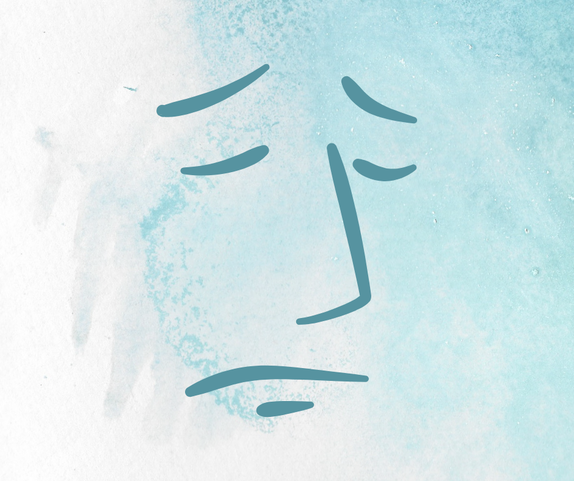
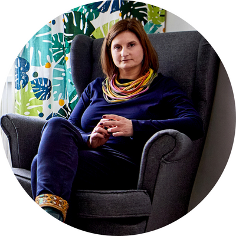

Jak radzić sobie z tym, co nieuniknione – ze stratą?
02 listopada – Zaduszki. To dzień, który ma swoje korzenie jeszcze w wierzeniach i obrzędach pogańskich. Obchody tego dnia, jak i mającego swoje korzenie w kulturze celtyckiej halloween, miały na celu nawiązanie kontaktu z duchami.
Spis treści:
- Dawne i współczesne próby zyskania przychylności duchów
- Śmierć, koniec, przemijanie wpisane są nierozerwanie w nasz świat
- Każda stara boli, ale nie zawsze tak samo
- Rola więzi w radzeniu sobie ze stratą
- Kiedy cierpimy my, cierpi też nasze ciało
- Straty te duże i te małe
Dawne i współczesne próby zyskania przychylności duchów
Rozpalano ogniska (które z czasem ogniska zamieniły się z znicze na grobach) i wynoszono jedzenie przed dom, by zbłąkane dusze miały przy czym się ogrzać i czym pożywić. W taki sposób nie tylko dbano o dusze zmarłych, ale także zapewniano sobie ich przychylność. Z biegiem lat starosłowiańskie obrzędy zamieniły się w zaduszkowe wspominki, którym towarzyszyły nastrojowe koncerty jazzowe, bluesowe czy spotkania poetyckie.
Rozmowy o tych, których już nie ma, pozwalają zachować ich pamięć, czynią ich niejako obecnymi w naszym życiu. Dzieła,które po sobie pozostawili, ale także wspomnienia w pamięci tych, co pozostali, czynią ich po części nieonieśmielanymi. Jednak wspominanie tych, których utraciliśmy ma znaczenie także i dla nas. Jest to sposób z jednej strony na wyrażenie emocji, które towarzyszą stracie, z drugiej na budowanie naszej własnej tożsamości.
Dzień Wszystkich Świętych i Zaduszki to sposób na radzenie sobie ze stratami, jakich doświadczyliśmy i oswajanie lęku przed śmiercią. Wspominanie bliskich nam osób, które odeszły pozwala zachować w nas samych kawałek ważnych dla nas osób. Przywołujemy je we wspominaniach, powieściach, poprzez zwyczaje i obrzędy. Próba nadania ciągłości jest naszym sposobem na poradzenie sobie z lękiem przed samotnością i śmiercią – uniwersalnymi lękami ludzkości.
Próby zyskania przychylności zmarłych widoczne są nie tylko w starosłowiańskich dziadach, ale też w mających swoje celtyckie korzenie wierzeniach i obrzędach obchodzonych w nocy z 31 października na 1 listopada, w wigilię wszystkich świętych („All Hallows’ Eve”). Jest to czas wspominania zmarłych i radzenia sobie poprzez żart i humor z lękiem przed śmiercią. Współczesne Halloween nie bez powodu obchodzone jest w tym dniu. Jest to nawiązanie do celtyckiego świętowania końca lata i początku jesieni.
Śmierć, koniec, przemijanie wpisane są nierozerwanie w nasz świat
Dawniej obrzędy związane ze zmianą pór roku, jak wspomniany koniec lata i początek jesieni, czy równonoc jesienna wpisywały się w rytm natury, której zmienność jest nieusuwalnym elementem. Równonoc jesienną świętowano dziękując za plony oraz zbiory lata i jednocześnie wypełniając rytuały oczyszczające, by otworzyć się na nową energię, która ma pojawić się w życiu, przyciągając pomyślność.
Dzisiaj obecna pora roku kojarzy się głównie z jesienną depresją, smutkiem i melancholią. Często uczucia te, jak i jesień oraz zimę chcemy wymazać z naszego doświadczenia; słynne „byle do wiosny”. Jednak uczucia te mimo iż często niełatwe i przygnębiające, stanowią ważną część naszej emocjonalności. Bowiem kiedy blokujemy przeżywanie jakiejś emocji, to stopniowo zamykamy się na odczuwanie w ogóle. W efekcie tracimy orientację w tym, co dla nas jest dobre. Milena Karlińska pisze „Smutek bywa dobry, bo daje nam siłę, by się zatrzymać, pomyśleć, pozwala dojść do ładu ze sobą. Gorzej, gdy zaczynamy z nim walczyć, biczujemy się z jego powodu, gdy prześladujemy się myślami. To najlepszy sposób, by zatonąć w rozpaczy”. Podobnie o smutku mówi Bartłomiej Dobroczyński. „Smutek nie jest czymś, co można wydestylować i wyjąć z siebie. To integralna część człowieka. Jak się odetniesz od smutku, to się odetniesz od wszystkiego […] Emocje są rzeczywiste, są po to, by je przeżywać.”1
Mierzenie się z końcem, zmianą, stratą wpisane jest nierozerwalnie w nasze doświadczenie. Dzieje się to na zewnątrz, kiedy zmieniają się kolejne pory roku i w nas w środku, kiedy musimy utracić coś, by móc zyskać coś nowego. Bez strat i pożegnań niemożliwy byłby rozwój. Nie zmienia to faktu, że bez każda strata jest bolesna. Z jednymi sobie radzimy, inne paraliżują nas, powodują, że sami się rozpadamy, a (nasz) świat się kończy.
Każda stara boli, ale nie zawsze tak samo
To, jak radzimy sobie ze stratą zależy od różnych czynników. Ważne jest zarówno to, kogo lub co tracimy, jaki i to, z czym pozostajemy. Równie ważne są nasze wcześniejsze doświadczenia – kolejne straty, z którymi przychodzi nam się mierzyć ukazują nie tylko fakt, że strata jest bolesna, ale także i ten, że pełne przeżycie straty i domknięcie procesu żałoby pozwala żyć dalej. Może to być źródłem nadziei w przepełnionym smutkiem, złością czy bezradnością dniach. Jednak jednym z podstawowych czynników jest nasz styl przywiązania, czyli to, jak wchodzimy i budujemy, ale przede wszystkim, jak przeżywamy nasze relacje z innymi ludźmi. Jeżeli udało nam się na drodze rozwoju wykształcić podstawowe zaufanie i poczucie bezpieczeństwa, przekonanie, że nie zostaniemy porzuceni, że świat jest przewidywalny, w miarę stabilny i możemy uzyskać adekwatną podpowiedź nasze potrzeby, jesteśmy w stanie znieść utratę ważnych dla nas rzeczy czy osób. Gdy podstawowe poczucie bezpieczeństwa nie mogło się wykształcić, a nasz świat wewnętrzny przepełniony jest poczuciem opuszczeniem, a czasami i rzeczywistymi doświadczeniami bycia porzuconym, utrata rodzi nie tylko bieżący ból, ale i przywołuje dawne wspomnienia. „Jakby ktoś [nas] z powrotem wrzucił do tej pierwotnej sytuacji bolesnej utraty.”2 Wtedy radzenie sobie ze stratą jest długim i trudnym procesem, bo wymaga opłakania nie tylko bieżących doświadczań.
Rola więzi w radzeniu sobie ze stratą
Ból, kiedy odchodzi ktoś bliski jest często wszechogarniający, jednak dobra relacja pozostawia po sobie ślad. Taka osoba nie znika zupełnie z naszego życia, pozostajemy ze wspomnieniami wspólnie spędzonych chwil, z tym, co ta osoba nam ofiarowała i co w nas zmieniła. Ślady obecności ważnych osób są widoczne w naszym życiu – w tym, gdzie jesteśmy, jakimi jesteśmy ludźmi i jakich wyborów dokonaliśmy. Pielęgnowanie tych wspomnień, czy kontynuowanie wspólnego dzieła często jest sposobem na poradzenie sobie z utratą.
Trudniejsza jest sytuacja, gdy relacja, która się zrywa, przepełniona była żalem, rozczarowaniem, złością czy niespełnieniem. Wtedy tak naprawdę stajemy przed wyzwaniem poradzenia sobie z podwójną stratą – odchodzi osoba, ale także żegnamy się nadzieją na to, że otrzymamy w tej relacji to, czego pragnęliśmy. Często nie ma, czego pielęgnować, a wspomnienia bardziej ranią niż roztkliwiają.
Kiedy cierpimy my, cierpi też nasze ciało
Kiedy żal, smutek, złość, poczucie krzywdy zalegają w nas, stają się dla nas destrukcyjne. Wstrzymana żałoba objawia się dolegliwościami psychosomatycznymi, depresją, zaburzeniami lękowymi, wpływa niszcząco na nasze relacje z innymi ludźmi i na całe nasze życie. Kiedy nie pozwalamy wybrzmieć naszym uczuciom, „odzywają się” one w naszym ciele. Lęk ściska nas za gardło, żal dusi, a ból sprawia że serce chce nam pęknąć. Uczucia, które nie zostały wyrażone, zaczynają żyć swoim życiem, powoli przejmując kontrolę nie tylko nad naszymi snami, kiedy jesteśmy bezbronni, wystawni na ich działanie, ale i nad całym naszym życiem, Żal, tęsknota mogą spowić naszą codzienności, ale także i złość może przejąć kontrolę nad naszymi wyborami i decyzjami. Dzieje się tak, kiedy w złości na kogoś dla nas ważnego, staramy się robić wszystko dokładnie w opozycji do jego wyborów i wartości, by za wszelka cenę nie być taki, jak on czy ona. Wtedy tracimy swoją odrębność, autonomię i indywidualność.
Straty te duże i te małe
Warto też pamiętać, że w naszym życiu doświadczamy wielu strat. Doświadczamy ich od pierwszych chwil naszego życia, wpisane są w każdą naszą relację i każde nasze doświadczenie, bowiem wszystko albo się kończy, albo zmienia. Relacja z drugą osobą wymaga od nas ustępstw, a więc i mniejszych lub większych utrat.
Stratą, poza ostatecznym odejściem kogoś dla nas ważnego, są zakończone przyjaźnie i znajomości, rozłąki, gdy ktoś wyjeżdża, rozstania i wyprowadzki, gdy dzieci dorastają i opuszczają dom rodzinny. Stratą jest też zakończenie terapii, szkoły, cyklu spotkań w tym samym gronie. Wszystko, co się zmienia, co nie będzie już trwało w takim samym składzie, gdy wiemy, że już nigdy nie spotkamy się w tym samym gronie i w tym samym miejscu.
Tracić możemy także marzenia, plany, wyobrażenia na swój i innych ludzi temat. Utrata złudzeń bywa równie bolesna i trudna do dźwignięcia, jak śmierć bliskiej osoby. „Przeżycie straty to również żal po utracie własnego zaangażowania, wysiłku, uczuć, czasu, niezrealizowanych planów.”3

Agata Hensoldt-Jankowska – psycholożka, certyfikowana psychoterapeutka (PTP), superwizorka w procesie certyfikacji, w Ośrodku Przystań prowadzi psychoterapię indywidualną, par i grupową oraz superwizje indywidualne i grupowe
Bibliografia:
- Jucewicz A. (2019) „Czując. Rozmowy o emocjach”, Wydawnictwo Agora, s.322
- tamże, s. 168
- tamże, s. 176
- „Koncepcja przywiązania. Od teorii do praktyki klinicznej” (2008) red. Józefik B., Iniewicz G., Wydawnictwo Uniwersytetu Jagiellońskiego
- Kübler-Ross E. (2021) „Rozmowy o śmierci i umieraniu”, Wydawnictwo Media Rodzina
- https://mamadu.pl/167710,halloween-historia-swieta-co-to-za-swieto-kiedy-sie-obchodzi-skad-nazwa
Psycholog Wrocław – umów wizytę online lub telefonicznie
Zapraszamy! Ośrodek Psychoterapii Przystań